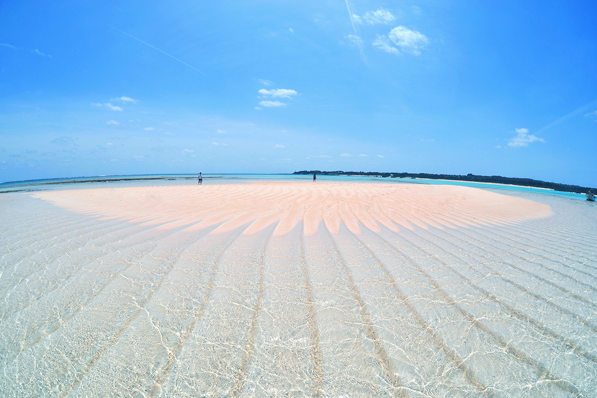
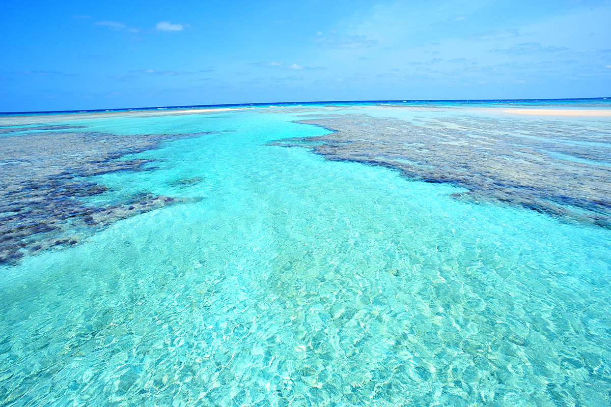
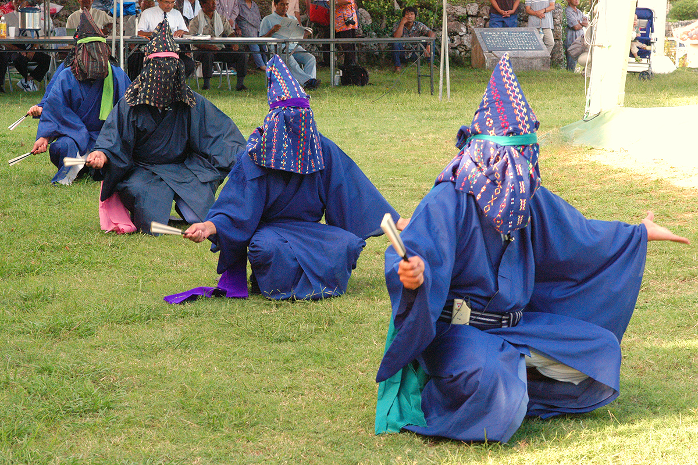
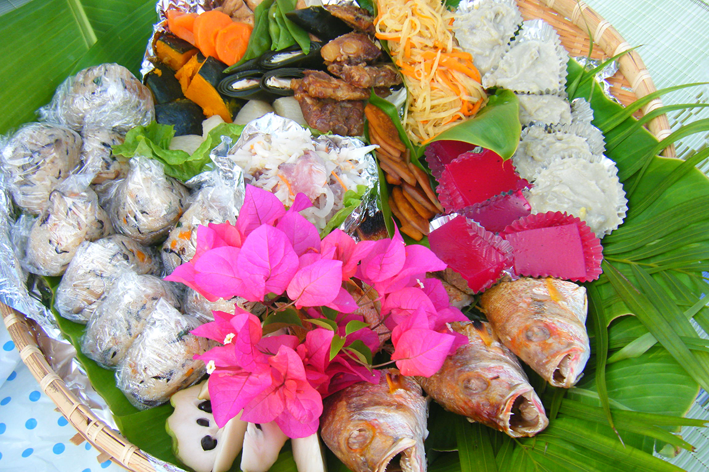
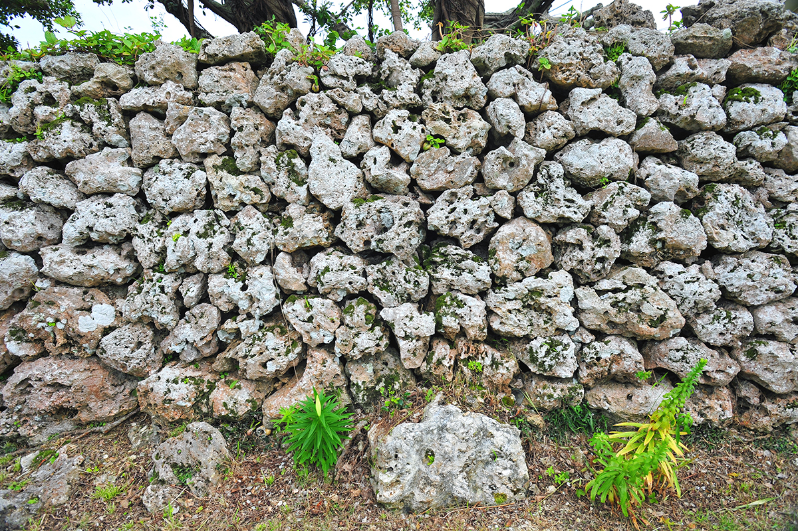
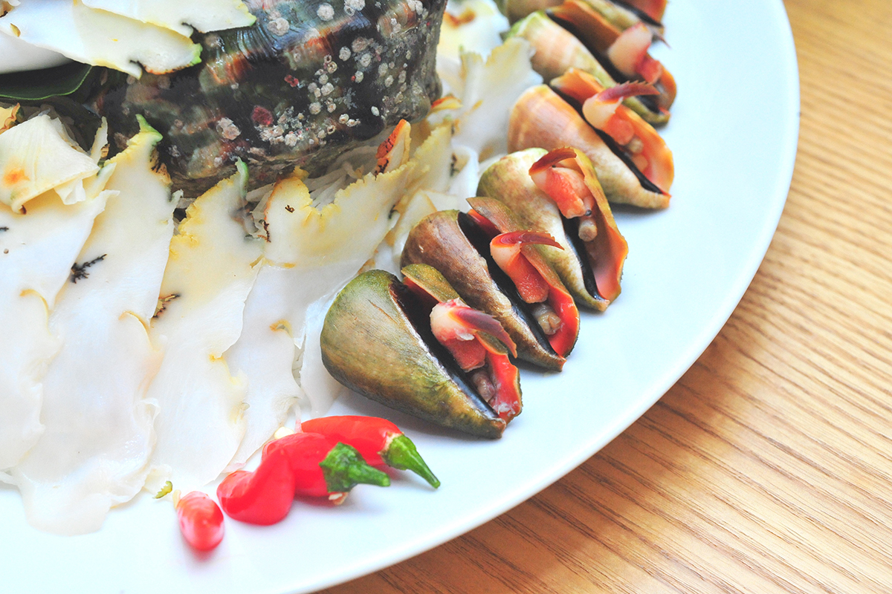

Префектура Кагосима · Ёрон · острова
Ёрон: остров, где песчаная отмель появляется из моря только в отлив

Ёрон лежит на самом юге префектуры Кагосима, и в ясный день из порта видно Окинаву. Небо, прозрачное море, праздник с древними танцами и рюмка сётю из чёрного сахара: таким этот остров показывает фотограф, который много лет снимает острова Японии.
Море
Пляж Оганэку и отмель, которой нет на карте
Небо здесь такое высокое, а вода такая прозрачная, что с белого пляжа хочется сразу бежать в море. Именно ради таких видов и едут на Ёрон: здесь тянет глубоко вдохнуть и никуда не спешить.

Красивых пляжей на острове много. Самый известный из них Оганэку. В дни сильных приливов, когда вода в отлив уходит особенно далеко, в море напротив него проступает песчаная отмель Юригахама. Она появляется и исчезает, как мираж. Есть и другие пляжи, например Мината и Тэрасаки, а если считать совсем маленькие бухты, их вокруг острова не сосчитать.
Праздник
«Ёрон дзюгоя одори»: танцы двух культур
Ёрон самый южный остров архипелага Амами. Это остров на границе префектур: из порта совсем близко видно главный остров Окинавы. Поэтому Ёрон издавна жил под сильным влиянием культуры Рюкю, и следы этого хорошо видны в старинном празднике «Ёрон дзюгоя одори».

Праздник проходит три раза в год. Считается, что он вырос из обряда вызывания дождя. Сами танцы составлены из двух частей: японской и рюкюской. Язык на острове тоже смешанный: местный говор, японский и окинавские слова. Ёрон относится к Кагосиме, но по культуре он во многом окинавский.

История
Руины замка Ёрон и деревня старых вещей
Остров почти плоский, и тем неожиданнее, что на высоте 94 метров стоят руины замка Ёрон. Отсюда видно всю равнину до самого моря, и вид того стоит.

Чтобы немного разобраться в быте островитян, рекомендуем заехать в деревню Ёрон миндзоку-мура. Здесь собраны предметы, которыми на острове пользовались поколениями, и можно послушать рассказы о прежней жизни.
Еда
Чем закончить день на Ёроне
Главное оставьте на вечер. На главной улице посёлка Тябана и чуть дальше от центра есть заведения, где готовят островную кухню. Классика, которую нельзя пропустить: местный сётю из чёрного сахара «Сима юсэн», моллюски-конусы, отваренные в солёной воде, и лапша соба с морскими водорослями мозуку.

Маршрут фотографа по острову простой: пройтись пешком по пляжу Оганэку, поужинать местной едой в Тябане и заглянуть в Ёрон миндзоку-мура, чтобы увидеть старые вещи и услышать историю острова.
Население острова 5115 человек, площадь 20,58 квадратного километра, длина береговой линии 23,7 километра (данные на июнь 2023 года). Паромы на Ёрон водят компании A-LINE и Marix Line.
Остров Ёрон
- Адрес
- префектура Кагосима, уезд Осима, посёлок Ёрон
- Телефон
- +81 997-97-5151 (туристическая ассоциация острова Ёрон)
- Как добраться
- самолётом из аэропорта Наха около 40 минут, из аэропорта Кагосима около 1 часа 40 минут, из аэропорта Амами около 40 минут; паромом из порта Наха около 4 часов 50 минут, из порта Мотобу на Окинаве около 2 часов 30 минут
- Сайт
- marixline.com
Фото: Ёдзи Като.